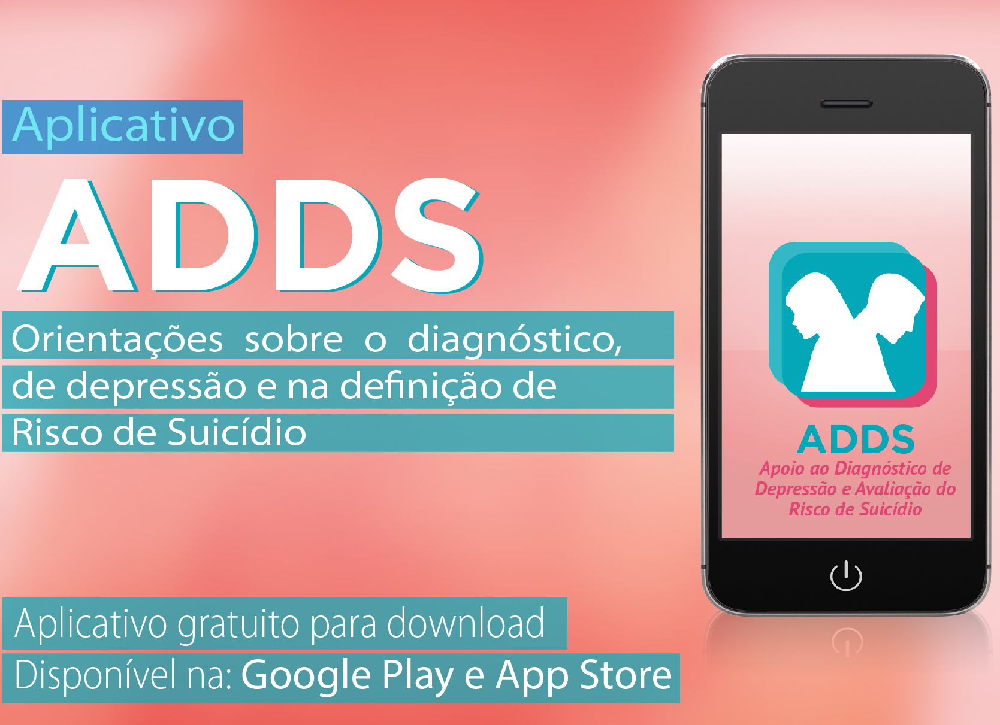
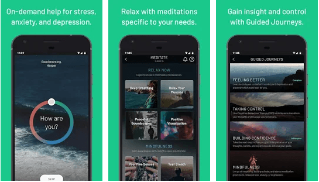
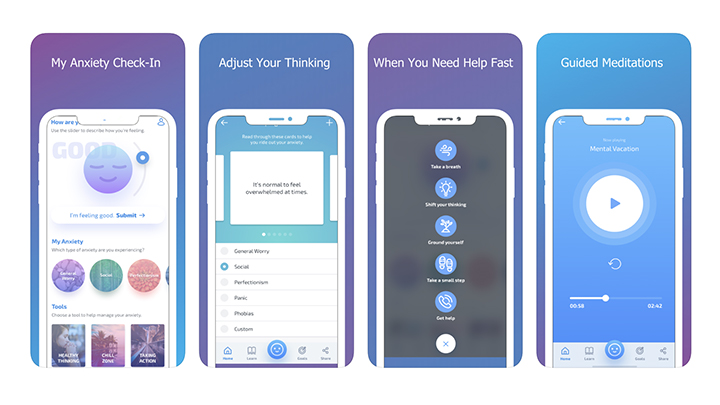
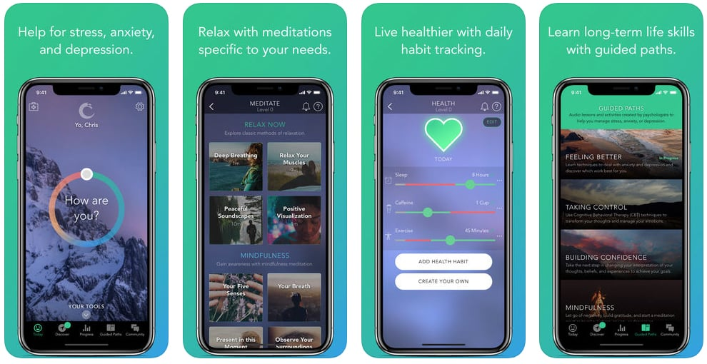

Saúde Mental: 6 aplicativos para te ajudar com ansiedade e outros transtornos.
São vários os transtornos mentais que vem atingindo diversas partes da população. Alguns dos mais “comuns” como a ansiedade, depressão, transtorno bipolar, entre outros. Por isso, fizemos uma lista de aplicativos que podem ser úteis para quem quer cuidar da saúde mental e melhorar o bem-estar.
ADDS
O Apoio ao Diagnóstico de Depressão e Avaliação do Risco de Suicídio (ADDS) foi desenvolvido pelo núcleo de Telessaúde do Programa de Pós-Graduação em Epidemiologia da Faculdade de Medicina da Universidade Federal do Rio Grande do Sul (UFRGS). O ADDS busca diagnosticar a depressão e definir risco de suicídio, mas lembra que não substitui julgamento clínico.
ADDS está disponível para Android e iOS.
Be Okay

Uma ferramenta simples que pode ajudar muitos durante algumas situações do dia. O Be Okay traz uma função para que o usuário controle sua respiração e passe por algum momento de ansiedade. Outros recursos, como fotos reconfortantes e botão para ligação para alguém que possa ajudar, estão disponíveis no aplicativo.
Be Okay está disponível para Android e iOS.
Sanvello
O Sanvello acompanha a rotina do usuário, o humor durante o dia, a qualidade do sono e a frequência de atividades físicas realizadas. Ele conta com aulas de meditação para momentos rápidos no meio do dia. O app é disponível em inglês.
Sanvello está disponível para Android e iOS.
Spiritual Me: Meditação

O Spiritual Me ajuda a relaxar e orienta meditações para dar energia na rotina. Conta com fases de progresso na rotina e ainda tem acesso a livros que tratam sobre espiritualidade, com o Alcorão e o Tao Te Ching, de Lao Tzu.
Spiritual Me está disponível para Android e iOS.
Mind Shift
O “Mind Shift” explica tudo sobre ansiedade e disponibiliza pensamentos realísticos sobre como “essa sensação vai passar” e “não posso prever o futuro”. O app tem uma seção para acalmar o usuário com vozes que narram situações relaxantes que ele deve imaginar.
Mind shift está disponível para Android e iOS.
Pacifica
No “Pacifica” é possível anotar diariamente como está o humor, quantas horas de sono se teve e quanto exercício físico foi realizado. Ele oferece aulas curtas de meditação e lugares para escrever inspirações e objetivos. O app só está disponível em inglês.